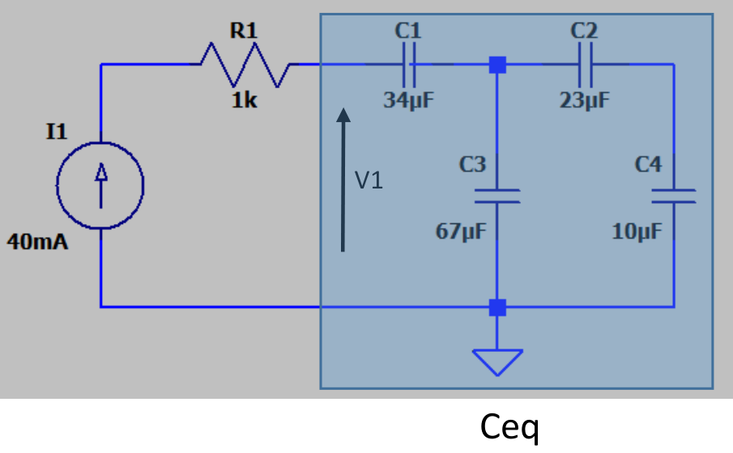

En lille tank til ladning. Konstant strøm ind giver en spænding, der stiger som en ret linje.
(a) FORKLAR · 2 SLIDES
Hvad en ideel kondensator er: og . Serie og parallel, som er omvendt af modstande.
(b) BEREGN · 2 SLIDES
Find for netværket i boksen og spændingen efter en strømpuls på 40 mA i 3 ms (starter i 0 V).
Opgavens kredsløb

→ / mellemrum: næste · ←: forrige · F: fuld skærm
SPM. 3 (a) · 1/2
En kondensator er en tank til ladningto plader og et isolerende lag
Vandtanken
Vandmængden er ladningen Q, og højden er spændingen V. En bred tank (stor C) stiger langsomt.
Den ideelle kondensator
Kapacitet [F]. Hvor meget ladning der skal til pr. volt. Større plader og tyndere isolering giver større C.
Strøm kun ved ændring. Står spændingen stille, er strømmen 0. I DC er C derfor en afbrydelse.
Konstant strøm: . Spændingen stiger som en ret linje.
ideelIngen tab og ingen lækstrøm. Ladningen bliver der, når strømmen stopper. Energi: .
Prøv selv: konstant strøm ind
Strøm I
Kapacitet C
SIGEn kondensator gemmer ladning: Q = C·V. Der løber kun strøm, når spændingen ændrer sig. Derfor giver konstant strøm en ret linje.
SPM. 3 (a) · 2/2
Serie og parallel: omvendt af modstande
Parallel: større plader
Samme spænding over begge. Ladningerne lægges sammen. Det er som at gøre pladerne større.
Serie: længere afstand
Samme ladning på begge (samme strøm i samme tid). Spændingerne lægges sammen, så bliver mindre end den mindste.
Prøv selv: to kondensatorer
C₁
C₂
SIGFor kondensatorer er det omvendt af modstande: parallel lægges sammen, og serie er produkt over sum. I serie deler de samme ladning.
SPM. 3 (b) · 1/2
Ceq: start længst væk fra klemmerne
C₁ = 34 µFC₂ = 23 µFC₃ = 67 µFC₄ = 10 µFI = 40 mA i 3 msR₁ = 1 kΩuden betydning
1
C₂ og C₄ i serie (samme strøm, intet sidespor)
2
Parallel med C₃ (samme to knuder)
3
I serie med C₁Mindre end C₁ = 34 µF, som det skal være for et serieled
Reducér netværket trin for trin
SIGStart længst fra klemmerne: C₂ og C₄ i serie, parallelt med C₃, og det hele i serie med C₁. Det giver Ceq = 23,3 µF.
SPM. 3 (b) · 2/2
Strømpulsen: 40 mA i 3 ms
4
Ladning fra pulsen
5
Spændingen over netværket
6
Hvorfor er R₁ ligegyldig?En ideel strømkilde leverer 40 mA uanset modstanden. R₁ ændrer kun kildens egen spænding, ikke V₁. Efter pulsen bliver V₁ stående: den ideelle kondensator holder på ladningen.
Strøm I
Pulslængde Δt
LADNING Q
V1
OVER C₁
OVER C₃
SIGPulsen giver 120 µC. Delt med 23,3 µF giver det V₁ ≈ 5,15 V, og den bliver stående, når pulsen stopper. R₁ betyder intet, fordi det er en strømkilde.